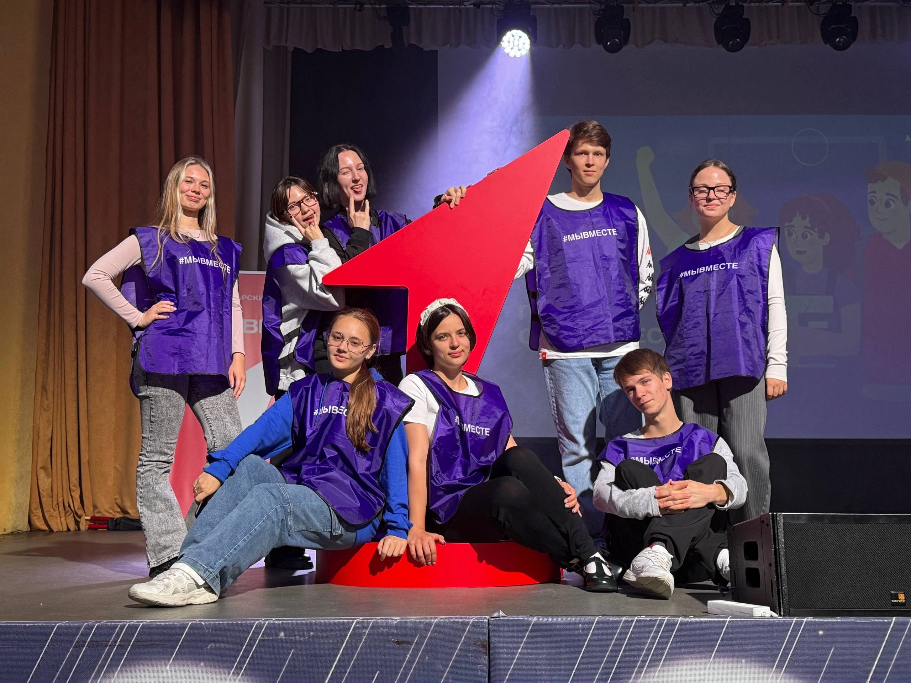
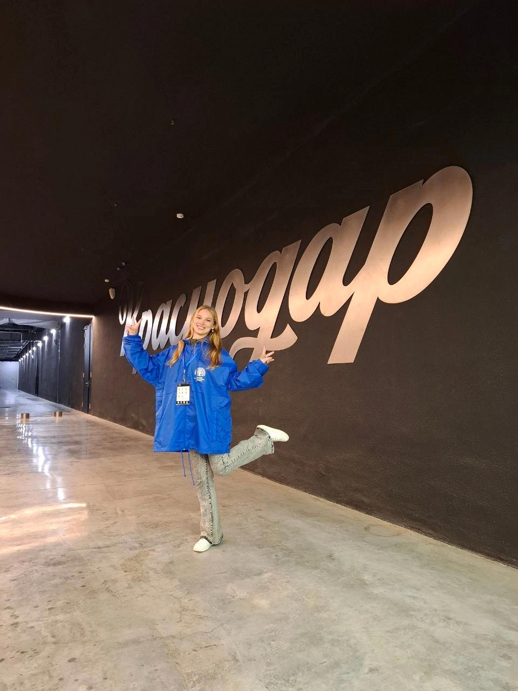
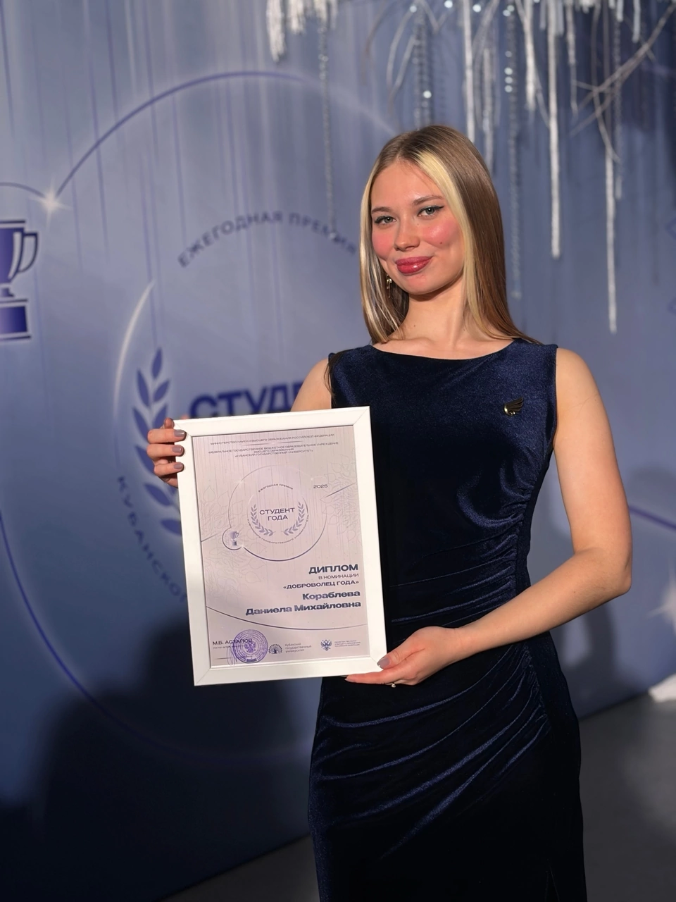
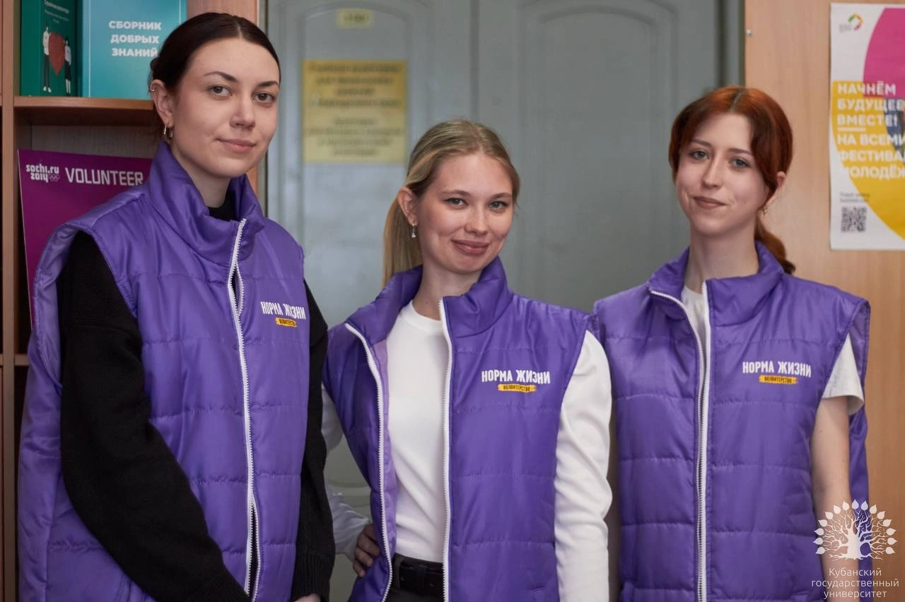

Волонтёрская деятельность
Волонтёрство занимает особое место в моей жизни. Это не просто «помощь другим», а возможность быть частью чего-то большего — участвовать в решении реальных проблем, учиться работать в команде и понимать, как устроен мир за пределами учебной аудитории. За время учёбы в университете я приняла участие в ряде мероприятий в качестве волонтера.
Волонтёрская деятельность научила меня ответственности, эмпатии и умению работать с самыми разными людьми. Эти навыки — soft skills — важны не меньше, чем технические знания, которые я получаю в магистратуре по прикладной математике и информатике.
Направления волонтёрства
1. Молодёжь и дети
Работа с молодёжью и детьми — одно из самых важных направлений волонтёрства для меня. Я участвовала в организации в организации III Форума информационных технологий «Призма – IT- территория». Главной задачей было создать профориентационную площадку для молодёжи — помочь подросткам осознанно выбрать IT-профессию.
Интересное мероприятие было, когда приезжала IT компания T1 в Кубанский государственный университет. Мы помогали направлять потоки людей. Параллельно я общалась с ребятами младших курсов, давала им советы и рассказывала свой опыт обучения. Так же и я для себя узнала про компанию T1, послушала про их стек технологий и пообщалась с представителями.
Конечно, моя волонтерская деятельность связана не только с мероприятиями сферы T1. Например, я так же участвовала в организации «Литературного диктанта», который проводился на базе КубГУ. Мы помогали ребятам с заполнением регистрационных бланков и выполняли поручения организаторов.
Что дало: умение объяснять сложные вещи простым языком, навык публичных выступлений, радость от того, что кто-то загорелся технологиями и нашёл своё призвание.
2. Спорт
Спортивное волонтёрство — это отдельный мир, где ценятся дисциплина, командный дух и умение работать в условиях ограниченного времени.
Я участвовала в качестве волонтёра на массовых спортивных мероприятиях Краснодара. Одно из самых незабываемых было участие в организации футбольного матча за кубок Winline Alma Mater, который состоялся на стадионе футбольного клуба «Краснодар». Играла команда КубГУ(Краснодар) против Broke Boys (Москва). Это было самое первое мероприятие, в котором я участвовала в качестве волонтера. Оно поразило меня своим масштабом и заставило влюбиться в это направление. .
Что дало: опыт работы в режиме реального времени, умение быстро принимать решения, навыки координации команды и взаимовыручки.
3. Культура и искусство
Культурное волонтёрство — это возможность прикоснуться к прекрасному и одновременно помочь другим людям открыть для себя искусство. Я участвовала в организации V открытого городского конкурса художественного слова «ГлаголЪ». Мы встречали участников конкурса и помогали им ориентироваться в порядке выступлений. Это было незабываемое мероприятие. Тогда я поняла как много талантливый детей, которые настолько проникновенно читали стихи, что хотелось плакать и смеяться вместе с ними. Каждое выступление оставляло свой след в моем сердце.
Что дало: понимание ценности культурного наследия, навыки общения с самой разной аудиторией, умение работать в творческой среде и в условиях нестандартных задач.
Упомянутые выше мероприятия — это лишь небольшая часть из тех, в организации которых я приняла участие. Каждое из них стало незабываемым: я помогала людям в моменте, а они взамен дарили мне незаменимый опыт и позитивные эмоции на всю жизнь.
Стоит особо отметить, что в благодарность за помощь в организации и проведении мероприятий Волонтёрский центр Кубанского государственного университета (ВЦ КубГУ) предоставляет не только позитивные эмоции, но и официальные документы — «Благодарности» и «Сертификаты», которые подтверждают вклад волонтёра в жизнь университета и города.
Волонтёрство помогло мне развить важные навыки
- Коммуникация — умение говорить с разными людьми.
- Работа в команде — распределение ролей, взаимовыручка.
- Ответственность — если взялся, нужно довести до конца.
- Тайм-менеджмент — совмещать учёбу, науку и волонтёрство.
- Эмпатия — видеть за задачей человека.
Главное достижение
2025
«Студент года» в номинации «Доброволец года»
Звание «Доброволец года» стало для меня неожиданным и очень тёплым признанием. За этой наградой — большое количество работы, десятки мероприятий и люди, ради которых всё это делалось. Я благодарна каждому, кто был рядом: коллегам по волонтёрскому центру, преподавателям, участникам. Волонтёрство научило меня, что самое ценное, что можно подарить — это время и внимание.
Фотографии

Помощь в организации Регионального этапа Всероссийского проекта «Первый Студенческий»,2025

Помощь в организации футбольного матча, состоявшегося на стадионе Академии футбольного клуба «Краснодар» в рамках второго розыгрыша Winline Кубка Alma Mater, 2025

Ежегодная премия «Студент Года» Кубанского государственного университета 2025. Диплом в номинации «Доброволец года», 2025

Помощь в организации и проведении торжественного открытия Центра привлечения и подготовки волонтеров Международного фестиваля молодежи 2026 на базе КубГУ, 2026